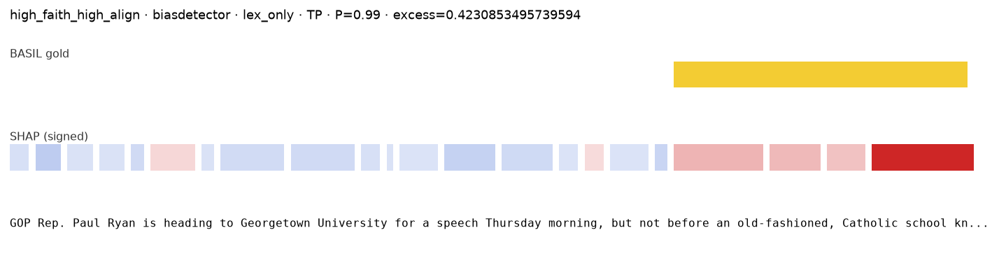
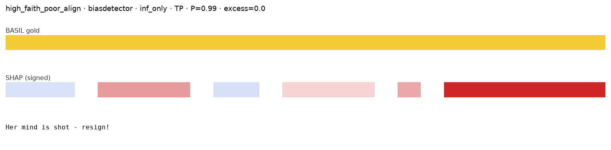
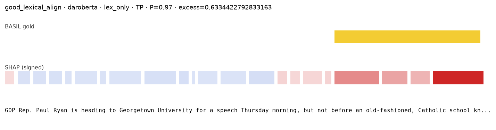
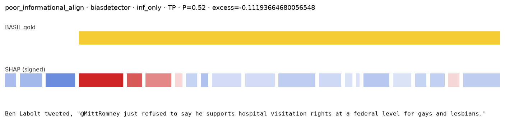
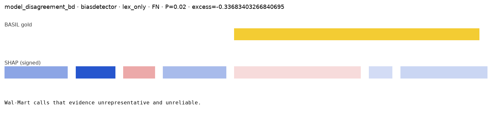
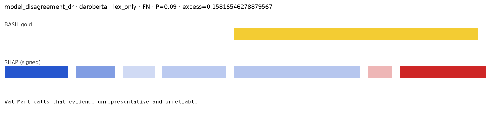
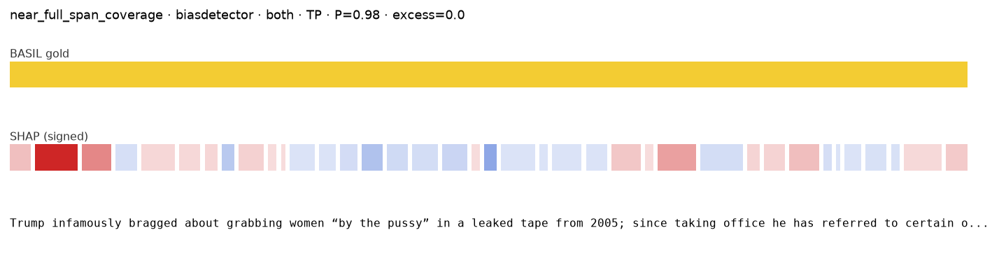

Illustrative only — not a representative quantitative sample. Seed=7.
id basil:29ffd053-7684-469b-a600-97000579bd01|2|0 · model biasdetector · cat lex_only · pred TP · P 0.990 · coverage 0.30 · excess 0.4230853495739594 · A_pos ΔP -0.9646463561803102
GOP Rep. Paul Ryan is heading to Georgetown University for a speech Thursday morning, but not before an old-fashioned, Catholic school knuckle-rapping.
Gold spans: [lex] “old-fashioned, Catholic school knuckle-rapping” [104:150]
Top |SHAP| words: knuckle-rapping.(+0.453), old-fashioned,(+0.093), Catholic(+0.084), Rep.(-0.070), school(+0.060), Thursday(-0.054), an(-0.045), morning,(-0.031)

id basil:8385a996-1afc-4778-a06d-7070a8f19e27|3|4 · model biasdetector · cat inf_only · pred TP · P 0.985 · coverage 1.00 · excess 0.0 · A_pos ΔP -0.945173654705286
Her mind is shot - resign!
Gold spans: [inf] “Her mind is shot - resign!” [0:26]
Top |SHAP| words: resign!(+0.508), mind(+0.171), -(+0.139), shot(+0.022), is(-0.013), Her(-0.008)

id basil:29ffd053-7684-469b-a600-97000579bd01|2|0 · model daroberta · cat lex_only · pred TP · P 0.968 · coverage 0.30 · excess 0.6334422792833163 · A_pos ΔP -0.9269185736775398
GOP Rep. Paul Ryan is heading to Georgetown University for a speech Thursday morning, but not before an old-fashioned, Catholic school knuckle-rapping.
Gold spans: [lex] “old-fashioned, Catholic school knuckle-rapping” [104:150]
Top |SHAP| words: knuckle-rapping.(+0.400), old-fashioned,(+0.170), Catholic(+0.116), school(+0.082), but(+0.020), an(+0.019), morning,(-0.013), for(-0.012)

id basil:8dc7ccfe-5cf0-482f-9101-a7c69881da4d|2|14 · model biasdetector · cat inf_only · pred TP · P 0.521 · coverage 0.85 · excess -0.11193664680056548 · A_pos ΔP -0.4992044195532799
Ben Labolt tweeted, "@MittRomney just refused to say he supports hospital visitation rights at a federal level for gays and lesbians."
Gold spans: [inf] “"@MittRomney just refused to say he supports hospital visita” [20:134]
Top |SHAP| words: "@MittRomney(+0.199), just(+0.136), tweeted,(-0.116), refused(+0.087), Labolt(-0.059), Ben(-0.052), he(-0.048), federal(-0.038)

id basil:2058ec60-5372-4f5f-83a3-da780be3a350|1|11 · model biasdetector · cat lex_only · pred FN · P 0.016 · coverage 0.51 · excess -0.33683403266840695 · A_pos ΔP 0.00556124746799469
Wal-Mart calls that evidence unrepresentative and unreliable.
Gold spans: [lex] “unrepresentative and unreliable” [29:60]
Top |SHAP| words: calls(-0.206), Wal-Mart(-0.085), evidence(-0.056), that(+0.053), unreliable.(-0.019), and(-0.011), unrepresentative(+0.001)

id basil:2058ec60-5372-4f5f-83a3-da780be3a350|1|11 · model daroberta · cat lex_only · pred FN · P 0.089 · coverage 0.51 · excess 0.15816546278879567 · A_pos ΔP 0.038742080330848694
Wal-Mart calls that evidence unrepresentative and unreliable.
Gold spans: [lex] “unrepresentative and unreliable” [29:60]
Top |SHAP| words: unreliable.(+0.232), Wal-Mart(-0.226), calls(-0.108), unrepresentative(-0.046), and(+0.046), evidence(-0.040), that(-0.014)

id basil:86e6e27d-1440-4879-8b13-0dd2d89f7281|3|6 · model biasdetector · cat both · pred TP · P 0.981 · coverage 1.00 · excess 0.0 · A_pos ΔP -0.22031033039093018
Trump infamously bragged about grabbing women “by the pussy” in a leaked tape from 2005; since taking office he has referred to certain other nations as “shithole countries” and slung insults at a wide range of political foes.
Gold spans: [lex] “infamously bragged” [6:24], [inf] “Trump infamously bragged about grabbing women “by the pussy”” [0:226]
Top |SHAP| words: infamously(+0.240), bragged(+0.105), has(-0.096), “shithole(+0.074), 2005;(-0.054), the(-0.042), insults(+0.038), Trump(+0.036)
